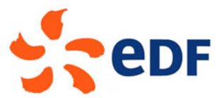
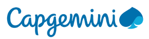
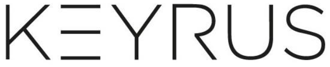

Depuuis 11/2018
Wikiwater Association de solidarité créée fin 2016 par un groupe d'experts bénévoles indépendants et lancée lors du 6 ème Forum mondial de l'eau, apportant des solutions pour l'accès à l'eau et à l'assainissement.
Pilotage de la finance et de la transformation digitale du site web https://wikiwater.fr. Financé à 100% par des dons privés.
- Etablissement des comptes, des documents financiers et du budget annuel, gestion du financement, suivi de la trésorerie et des investissements - Refonte du site Web (CMS SPIP, HTML5 CCS3), 3000 vues/jour, 197 pays: appropriation rapide des enjeux digitaux via des formations Google, Facebook,Web Traffic et langages de programmations, conception de la nouvelle maquette du site, réalisation de la recette, référencement SEO, SEM, mise en place des campagnes d'acquisition réseaux sociaux & emailing.
Accélération de la stratégie de lobbying ministériel et de la relation avec les opérateurs de la filière eau: SUEZ, VEOLIA, AFD, PFE.
01/201410/2018

Périmètre EDF Assurances SAS courtage en assurances, Division Assurances EDF SA et Captives-Budget 500M€, 50 salariés-Levallois-Perret.
Pilotage de la gestion comptable, budgétaire, financière, fiscale et de trésorerie des actifs assurantiels d'EDF (centrale, parc automobiles, personnel...) représentant 222 M€ de primes d'assurances hors Vie - Equipe 5 collaborateurs (4 comptables 1 contrôleur de gestion).
- Production et fiabilisation des comptes sociaux et des documents financiers : élaboration des comptes sociaux et des arrêtes mensuels, déclaration fiscales et sociales, reporting pour Controlling Groupe et préparation des dossiers pour le Conseil de Surveillance. - Professionnalisation de la performance financière : mise en place et automatisation de la comptabilité analytique, d'une procédure d'élaboration budgétaire et d'un reporting analytique sur les captives d'assurances, mise en place du suivi hebdomadaire de la trésorerie, harmonisation des référentiels SAP et SAGE. - Mise sous contrôle des flux : intégration du contrôle interne (création du poste) audits spécifiques et analyse des coûts de production et des marges des pôles, renégociation de clauses avec les compagnies d’assurance, réévaluation de la base sinistres et réduction des provisions de 32 M€, établissement du TCOR (Total Cost of Risk).
09/200512/2013

CAPGEMINI, leader mondial de la transformation digitale, Bénéfice 730 M€, 198 000 salariés, Paris La Défense
Conduite des projets d’intégration et d’évolution de solutions Finance/Contrôle de gestion/Reporting autour des solutions de consolidation, BI et décisionnelles : SAP BW et BPC, Cognos Planning, Hypérion Essbase & Planning.
- AMOA : recueil des besoins, rédaction et validation des spécifications fonctionnelles, staffing des équipes, déploiement des solutions (y compris une solution interne chez EDF), réalisation de la recette, rédaction de procédures opératoires. -Accompagnement des clients tout au long du projet : entreprises du CAC 40 telles que EDF, VEOLIA, KERING, AXA, BNP PARIBAS et grands comptes tels que LA REDOUTE.
06/200408/2005

KEYRUS, SSII spécialisée dans la Business Intelligence CA 100 M€, 1000 salariés Paris
Étude et mise en place d’outils de simulation et de solutions d’élaboration & suivi budgétaire, particulièrement Cognos, pour des ETI des secteurs de la distribution et du manufacturing
09/200005/2004
SCHLUMBERGER, Services et équipements pétroliers CA 35 Mds€, 100 000 salariés Montrouge
Étude et mise en place d’outils de simulation et de solutions d’élaboration & suivi budgétaire, particulièrement Cognos, pour des ETI des secteurs de la distribution et du manufacturing
1998 2000
Groupe SDTE Ariane Telecom, CA 12 M€, 49 salariés Pantin
Création et informatisation du pilotage financier et du contrôle de gestion : 3 collaborateurs, rattachement au PDG
Vous pouvez aussi me contacter par email à cette adresse : benoit.flicoteaux@yahoo.com